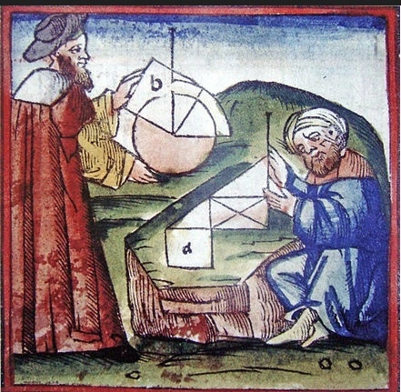

Geometry in middle age.
In the Middle Ages, mathematics in medieval Islam contributed to the development of geometry,
especially algebraic geometry. Al-Mahani (b. 853) conceived the idea of reducing geometrical
problems such as duplicating the cube to problems in algebra.
Thābit ibn Qurra (known as Thebit in Latin) (836–901) dealt with arithmetic operations applied to
ratios of geometrical quantities, and contributed to the development of analytic geometry.
Omar Khayyám (1048–1131) found geometric solutions to cubic equations.
The theorems of Ibn al-Haytham (Alhazen), Omar Khayyam and Nasir al-Din al-Tusi on quadrilaterals,
including the Lambert quadrilateral and Saccheri quadrilateral, were early results in hyperbolic
geometry, and along with their alternative postulates, such as Playfair's axiom, these works had a
considerable influence on the development of non-Euclidean geometry among later European geometers,
including Witelo (c. 1230–c. 1314), Gersonides (1288–1344), Alfonso, John Wallis, and Giovanni
Girolamo Saccheri.